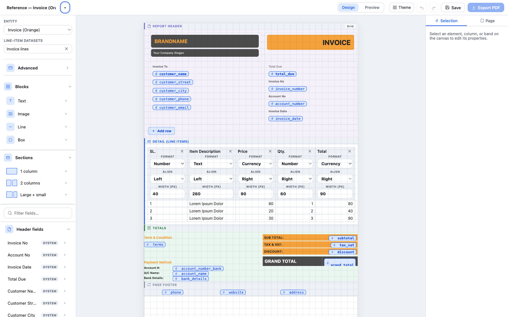
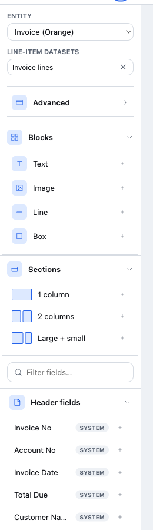
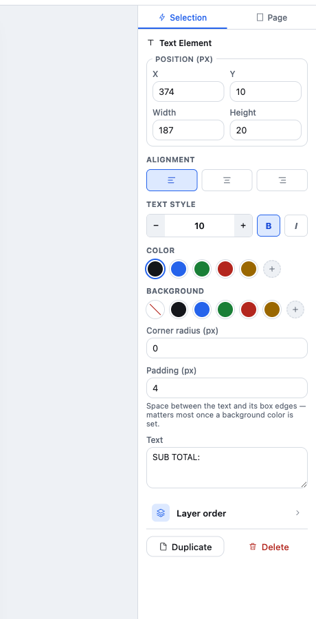
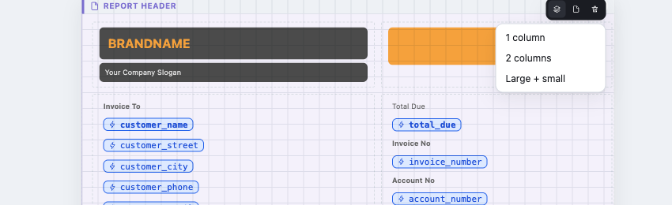
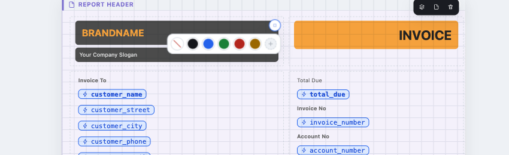
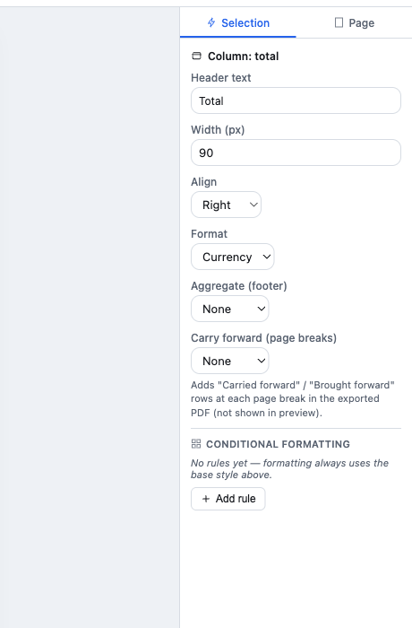
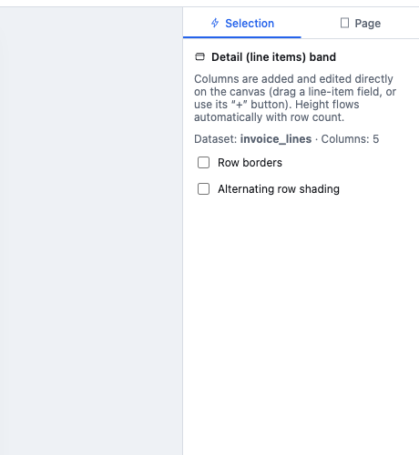
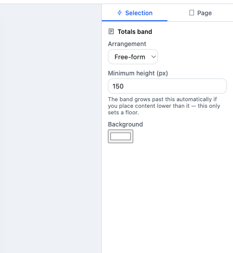
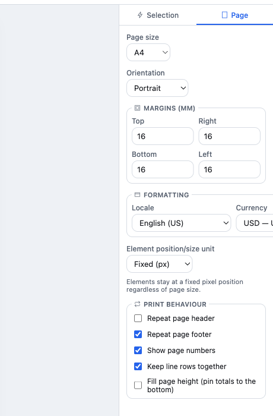
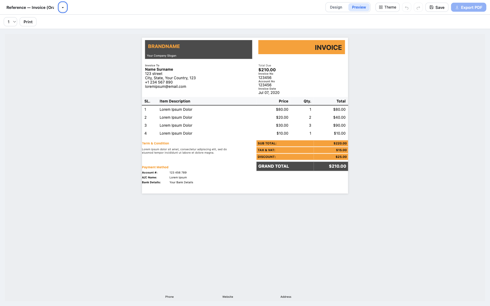

Everything you can build with DocSmith, in one place
A tour of every band, element, and property in the designer — position and size, alignment, color and background, grid sections, line-item columns, page setup, and more — each shown against a real template, not a mockup.

Basics
Document anatomy: bands
A template is built from a fixed stack of bands, always in this order. Page Header and Page Footer are optional and repeat on every printed page; the rest flow once per document.
Basics
Layout arrangements
Report Header and Totals can each be laid out one of three ways. Detail is always a table; Page Header/Footer are always free-form.
Place anything, anywhere
Drag elements to an exact X/Y position and size. Full control, but you position everything by hand — this is what Totals, Page Header, and Page Footer use.
Bordered rows & columns
Rows of 1, 2, or more side-by-side cells, each independently sized. Best for forms — a "Seller" cell spanning a full row above two narrower "Invoice #" / "Date" cells. Used by Report Header in this example.
Flows top-to-bottom
Elements auto-flow like a simple document — no X/Y to manage, width is a percentage of the row. Height is always automatic.
Basics
Element types
| Kind | What it's for |
|---|---|
| Text | A static label you type yourself — "SUB TOTAL:", "Term & Condition". |
| Field | A value bound to your data — a header field (Invoice #, Customer Name) or a line-item column. Never fabricated: an unconnected field shows honestly empty, never a fake sample value. |
| Image | A logo or photo, from a URL — or a per-row bound image in a Detail column. |
| Line | A plain horizontal rule — the simplest way to visually separate two sections. |
| Box | A plain rectangle — background fill and corner radius, no text. |
Add any of these from the Blocks panel on the left, or drag a field directly from Header fields / a line-item column onto the canvas.

Styling an element
The Properties panel
Select any element on the canvas and its full set of controls appears on the right. This is the same panel for a free-form Text/Field element — everything below is explained against this one screenshot.

Position & size
X/Y position and Width/Height in pixels (or percent, if the template uses percentage units). This is the element's own bounding box — everything else (alignment, background, padding) is relative to it.
Styling an element
Alignment
Left / Center / Right — where the text sits within its own box. A right-aligned field in a wide box will hug the box's right edge, not its left.
Text style
Font size (with quick −/+ steppers), Bold, and Italic.
Styling an element
Color & Background
Both are swatch rows: five presets plus a custom picker (the "+" swatch opens a full color picker for any hex value). Background also has a "No fill" option (the diagonal-line swatch) — the standard way to clear it back to transparent.
SUB TOTAL: row in the overview screenshot above. Pair it with Padding (next) so the text doesn't sit flush against the edge.
Styling an element
Corner radius & Padding
Corner radius rounds the element's box corners — 0 is a sharp rectangle, higher values round it, a large enough value makes a pill shape.
Padding is the space between the text and its own box edges. It has no visible effect until a background color is set — that's exactly when it matters most, so the text has breathing room instead of touching the color's edge.
Styling an element
Layer order
Only matters when two elements visually overlap — e.g. a plain Box used as a colored background sitting behind a Text label. Bring forward / Send backward swap which one paints on top. If nothing in your layout overlaps, these buttons won't visibly do anything — that's expected, not a bug.
Grid sections
Rows & column layouts
When a band is set to Grid arrangement, it's organized into rows — each row is a "section," and each section can have its own column split. Hover any section to reveal its toolbar.

- Add a row — the "+ Add row" button at the bottom of the band creates a new, empty section with the default column layout.
- Fill a cell — click an empty cell to search for a field or type your own text, or drag a field/block onto it directly.
- Change a section's layout — hover the row, click the layers icon, pick 1 column / 2 columns / Large + small.
- Split a wide cell — a cell spanning more than one column shows a small grip handle at its center; click it to divide the cell in two.
- Duplicate or delete a whole section from the same hover toolbar.
Every section shows a light dashed outline in the Design canvas even without a printed border, purely so you can see its extent while editing — it never appears in Preview or the PDF.
Grid sections
Whole-cell background
Hover any filled cell and a small circular "Fill" button appears at its top-right corner. It opens the same color palette as an element's Background swatch, and applies that color to every element stacked in that cell at once — the fastest way to make a cell read as one solid block, like the BRANDNAME cell in the overview screenshot.

Line items
Columns & formatting
Click a column's header text (not the format/align controls beside it) to select the column itself and open its full Properties.

| Field | Controls |
|---|---|
| Header text | The column title shown in the table. |
| Width | Pixel width of the column. |
| Align | Left / Center / Right for every row's value in this column. |
| Format | Text, Number, Currency, Date, Words (spells out a number), Image. |
Line items
Totals & carry-forward
Aggregate (footer) — Sum, Count, or Average — adds a computed row directly under the line items, right in the same table. Only shown for Number/Currency columns, since summing text or dates doesn't mean anything. Defaults to None: nothing shows until you deliberately turn it on for a specific column.
Carry forward (page breaks) — for a document long enough to span multiple pages, this adds "Carried forward" / "Brought forward" subtotal rows at each page break in the exported PDF. It's PDF-export-only — Preview never shows carry-forward rows, since it has no concept of page breaks.
Line items
Borders & striping
Select the Detail (line items) band itself (not a column) for two table-wide toggles.

- Row borders — on by default; a thin line under every row. Turn off for a fully borderless table (like the Invoice (Orange) template's line items).
- Alternating row shading — a light gray tint on every other row, off by default so it never silently changes an existing template's look. A fixed tint, not a color picker, to keep it a one-click decision.
Page-level
Band settings & height
Select any free-form band (Totals, Page Header, Page Footer) directly — click its label bar on the canvas — for its own settings.

Page-level
Page setup & margins
The Page tab (next to Selection, top-right) covers everything about the physical page itself, independent of any one band.

| Setting | What it does |
|---|---|
| Page size / Orientation | A4, Letter, A5, Legal — portrait or landscape. |
| Margins (mm) | The real, physical print margin on all four sides — honored by both the Preview and the exported PDF. |
| Locale / Currency | Drives number, date, and currency formatting for every Field on the page. |
| Element position/size unit | Fixed (px) keeps elements at an exact pixel spot regardless of page size; percentage scales them proportionally instead. |
| Repeat page header/footer | Independent of whether the bands exist — this toggles whether they actually repeat on every printed page. |
| Keep line rows together | Prevents a single line-item row from being split across a page break. |
| Fill page height | Stretches content to a full page and pins Totals to the bottom, instead of leaving it wherever the last row ends. |
Page-level
Preview & export
Toggle Design / Preview at the top at any time — Preview renders your actual data through the exact same engine used for the exported PDF, so there's nothing to double-check between the two.

Print (in Preview) opens your browser's native print dialog against the real rendered page. Export PDF (top-right, always available) generates the archival PDF via the render service — the same source, guaranteed page breaks and repeating headers included.
Reference
Property quick reference
| Want to… | Where |
|---|---|
| Move or resize something | Select it → Position & size (Properties panel) |
| Change text color | Select a Text/Field element → Color swatches |
| Add a background color to a label | Select it → Background swatches (then add Padding so it isn't cramped) |
| Round a box's corners | Select it → Corner radius |
| Color a whole section at once | Hover the cell on the canvas → Fill button |
| Add/remove a row in a form-style header | "+ Add row" at the band's bottom, or the section's own hover toolbar to duplicate/delete |
| Sum a line-item column | Click the column header → Aggregate (footer) → Sum (Number/Currency columns only) |
| Stripe the line-item table | Select the Detail band → Alternating row shading |
| Let a section grow with its content | Nothing to do — it already does; Minimum height is a floor, not a ceiling |
| Change the physical print margin | Page tab → Margins (mm) |
| Repeat a logo on every page | Enable Page Header, then Page tab → "Repeat page header" |